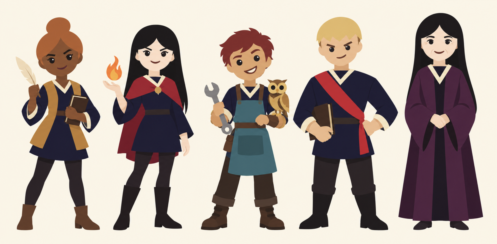

Character portrait workshop
21 characters · minimal shapes · white pupil highlights. Saved crop adjustments update the live game portraits directly.
Appearance priority: card descriptions → worldbook → SVG → inferred design. The evidence under each character distinguishes written anchors from styling choices.
Style reference

Loading artwork…
Individual upper-body concepts · 1024 × 1024 · padded square PNGs. Each portrait is cropped from its own concept.